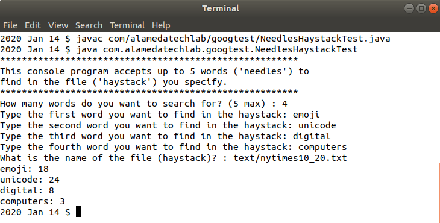

The words you search for are called needles, and the plaintext file comprises the haystack in which to search.
Download the compiled NeedlesHaystackTest.class file or download the java source and compile on your own system. The code was written and compiled using Java SE (Oracle JDK) 11.
Before running the application:
To run the application:
java com.alamedatechlab.googtest.NeedlesHaystackTest
The application prompts you to enter the number of words that you want to find in the haystack, the name fo the file to search, and the words themselves. Respond to the prompts with your choices:

Entries are validated before proceeding, and an array of the specified size is created.
The haystack is split into an array of individual words using
a regular expression identifying quotation marks, apostrophe, tab, newline,
form feed, and return characters and creating word tokens from the isolated substrings.
The length of the haystack array is then used to drive the comparison of each specified
needle to each word in the haystack array.
A counter keeps track of the number of instances of each word found in the haystack array.
After all specified words are processed by the loop, each word and its total is printed at the console.